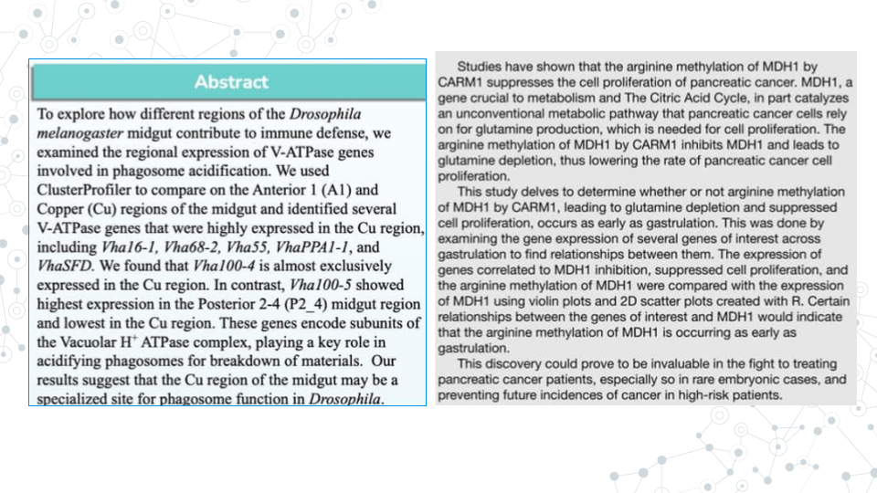
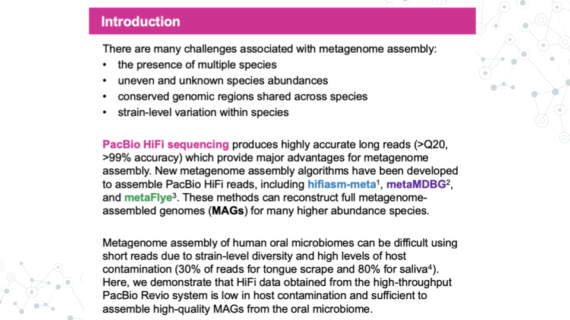
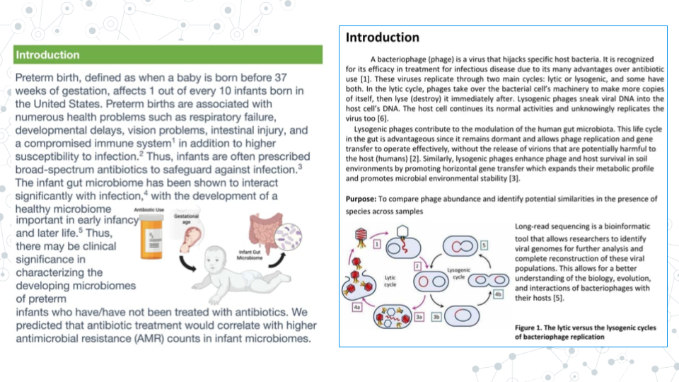
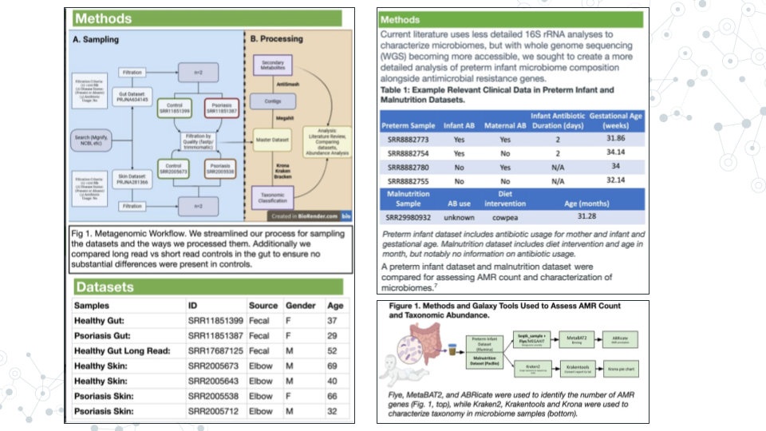
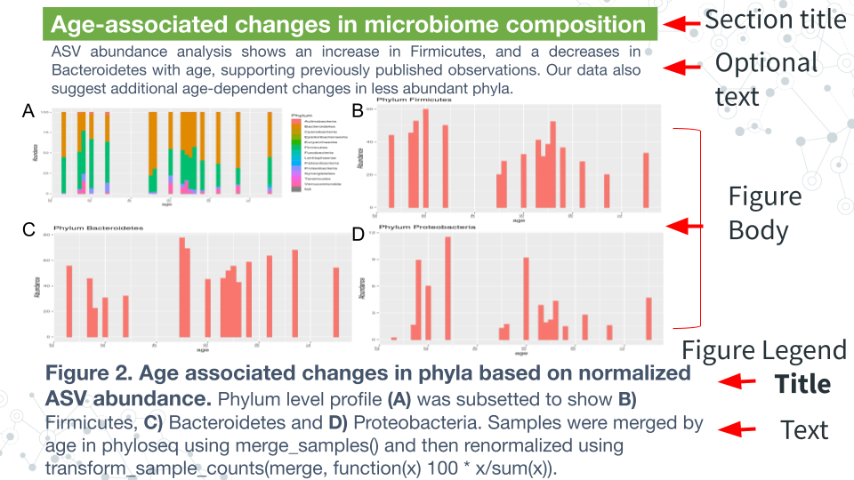
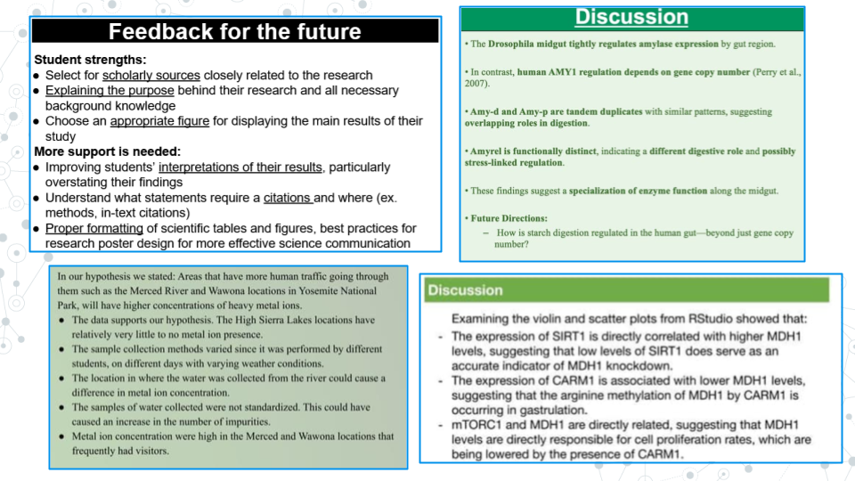
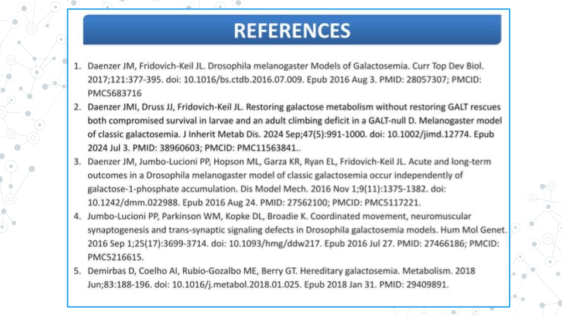
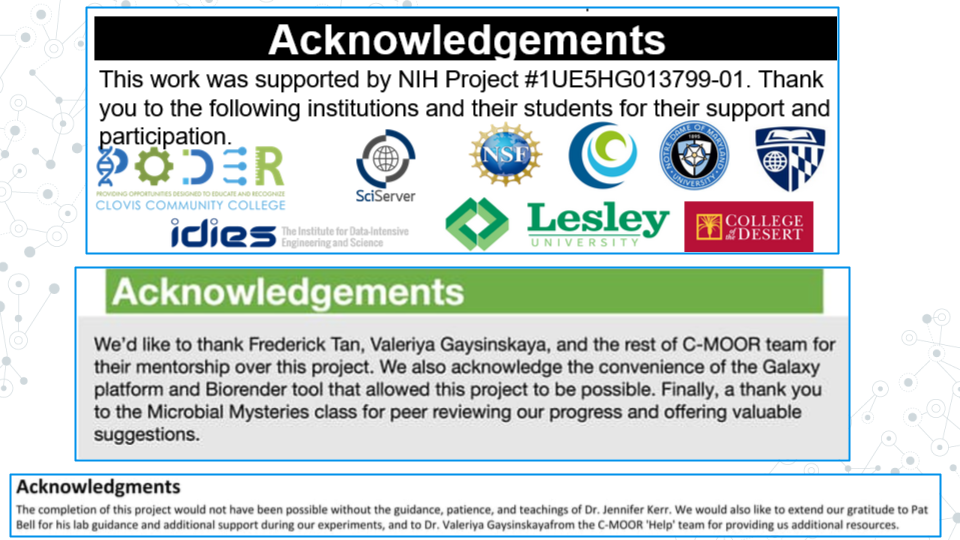

6.3 Making Group Poster
6.3.1 Preparing to make a poster
An important part of scientific research is presenting your findings. Poster is a powerful visual way to communicate new and exciting findings, share ideas and get feedback. No wonder Poster sessions are an integral part of any conference or symposium. Throughout research project work, students will work with their groups to put together a scientific research poster.
6.3.2 Part 1 - Choose a Template
Estimated time: 5 minutes
- With your group, open a suggested poster template to use for your poster.
- Discuss with your group how you will divide up the work and exchange important information (e.g. phone numbers, email). Consider the following sections:
- Abstract/Introduction
- Methods
- Results
- Conclusions/Discussion
- References
- Acknowledgments
Notice these posters are sized at 36 x 42 inches, but there are many other commonly used sizes. Refer to your instructor on what poster size to use; not every poster will fit every stand when printed (if applicable). Notice that the posters in this slidedeck come in two-column, three-column, and mixed formats. Think about your figures and tables and select a format that makes the most sense for them. There are also some example posters in the last two slides that we will use to examine the anatomy of a research poster further in the next part.
6.3.3 Part 2 - Make an Academic Research Poster
Estimated time: —
- Complete the following components of your research poster with your group. You might not do them in this order, but these are the components you are being graded on. For more details on each of these sections and their role in a scientific paper, see the Scientific Literature Lab.
6.3.3.2 Abstract
C-MOOR Abstract examples:

PacBio’s published abstract on ‘Genome-resolved metagenome assembly of human oral microbiome using highly accurate long-read sequencing’.

An abstract is a concise summary of your work. An effective abstract will inform the reader of the relevant background to the research, scientific hypothesis being tested, the purpose of the study, the main methods, and the most important results and conclusions.
Abstract can be difficult to write because it combines all research pieces and requires effective and consice communication of those sections. Many scientists choose to write the abstract last, after they fully understand the conclusions and implications of their work. Identify your scientific question, your hypothesis, and the knowledge gap (the unknown your research is addressing) first. Then brainstorm what you will need to tell your readers in terms of context and background.
Your abstract should do the following:
- Include relevant background information such as:
- A problem or question at hand
- Model organism
- The gene of interest and its function
- The relevant phenotypes (e.g. disease-state)
- The known connection between genotype and phenotype
- Relevant biological processes- Clearly state hypothesis, aims, and/or objectives of the research.
- e.g. Our hypothesis is that the healthy gut microbiome has more microbial diversity than the gut of an individual with a celiac disease.`
- e.g. We hypothesize that maternal antibiotic treatment correlates with higher antibicrobial resistance in infant microbiome.`- Summarize or briefly mention methodology you used in your research.
- e.g. Using Galaxy we analyzed the genomic diversity of the gut microbiome and compared fecal samples between individuals with Celiac Disease (CD) and a control group on a healthy diet without CD.`
- e.g. We analyzed a publically available dataset comparing RNA-seq gene expression between the left and right eye in DESeq2.`- Summarize the main results of your study, and how they may relate to the hypothesis.
- e.g. We found that gene X was differentially abundant between the eye and all other tissues, suggesting gene X plays an important role in the eye. This may be important for learning more about eye development and X condition.`
- e.g. We found an association between age and the presence of Y bacteria, which supports our hypothesis that Y bacteria is involved in the disease state`6.3.3.3 Introduction

Introductions typically appears immediately after the Abstract section and contains background information. Sometimes, an Introduction section can be used instead of the Abstract section, in which case, the Introduction will contain both, abstract information plus additional background information. An Introduction typically contains the relevant information and context needed to understand the study and the study’s hypothesis/aims/objectives and does not include the methodology, results, or takeaways from the study.
6.3.3.4 Materials and Methods

The materials and methods section will detail your analysis of the data. Don’t provide any of your results, just the methods. If you did not generate the data yourself from raw samples, you will simply cite the paper that made them instead of detailing their construction. We will also need to list any programs we used and provide credit to their creators.
Some other things you might include would be what type of analysis you decided to do (which parts of the body parts you analyzed, sets of genes, what p-value you used, etc.).
6.3.3.5 Results

The Results section is where you will detail your data primarily through figures and tables, though sometimes written text is included. Begin by creating your tables and figures.
Figure body:
- Has high resolution images, well spaced and labeled parts and text.
- Place the figures and tables in order of how you want to present them and name them such as Figure 1, Figure 2, Table 1, Table 2, etc.
Figure Legend:
- Figures have their legends underneath them. Tables may have their legends also above them.
- The legend should be in a smaller font than the main text on the poster.
- A legend should includes a figure title, which is a declarative statement that summarizes findings.
- A legend also includes figure text which a) identifies (and can briefly describe parts), b) includes brief description of of methods necessary to understand figure and c) should include relevant statistics (stats).
Optional components
- Figures and Tables can have additional (optional) text. E.g.an optional text can describe the findings of the figure upfront to engage.
- A Section Title/Header which summarizes section or figure in a manner that is broader than figure legend title - an attention grabber.
- Bullet pointed text that summarizes the main findings of the figures/tables.
6.3.3.6 Conclusions/Discussion

The discussion section of the paper is your chance to analyze and interpret your results. The discussion section generally addresses the following:
- What do your results mean?
- How do they fit into the bigger picture?
- If any experiments did not give expected results, hypothesize why that might have been the case and propose alternate experiments that could confirm or clarify your results.
- Include at least one sentence of future work that you would do if you had more time or what students in upcoming semesters could do to continue to answer your questions.
6.3.3.7 References

All the references that you cite on your poster must be present in a References section including the following sections: Introduction, Methods, and Discussion. To save space on our posters, we will number our references (ex. 1-5) and use the numbers as citations throughout the text of your poster. You may have a lot of references; it is okay to put them in tiny text if you have to in order to make them fit.
There are many different ways to format the reference section. We will make ours in alphabetical order by the first author’s last name. All of your sources must be scientific journals and should use the following format:
Authors (year) “Title.” Journal Name, vol. #, page #s, DOI
Online article that is also in print:
Haussecker D., Huang Y., Lau A., Parameswaran P., Fire A. Z. and M. A. Kay (2010) “Human tRNA-derived small RNAs in the global regulation of RNA silencing.” RNA, Vol. 16, page 637-695, doi:10.1261/rna.2000810
Online article only:
Marianes, A. and A. C. Spradling (2013) “Physiological and stem cell compartmentalization within the Drosophila midgut.” eLife, doi:10.7554/eLife.00886
6.3.3.8 Acknowledgements

The acknowledgements section is where you give thanks to the people, organizations, and institutions that have supported you in your research. If relevant, include the grant ID # of your funding source. Institutions and organizations that have contributed to your research - but you do not belong to - can be thanked here.
6.3.4 Part 3 - Proofread and Add Final Touches
Estimated time: 30 min to an hour
- Each group member should re-read the poster from beginning to end and fix any typos or grammatical errors.
- Check the alignment of figures, text boxes, titles, etc.
- Add some finishing touches. You can play with the color, the font, add additional images if it’s relevant.
6.3.5 Part 4 - Canvas Discussion
Estimated time: 30 min
You will turn in your poster to be graded as a group in a Canvas Assignment and post it to a Canvas Discussion to be viewed by the class.
- Convert your poster to a pdf.
- Have one member of your group turn in the pdf of your poster to the Graded Canvas Assignment. This assignment is already set up so that if one group member turns it in, it will show as submitted for all students in the group. This is where your instructor will grade you poster as a group.
- Have one member of your group post a pdf of your poster in the Canvas C-MOOR Poster Discussion.
- With your poster, introduce your group members and copy and paste your abstract into the post.
- Insert your pdf into the post and edit the link so that it automatically shows the inline preview. This will make it easier for students to view your poster.
- As an individual, read through the other posters from different groups.
- Post comments
6.3.6 Grading Criteria
Your instructor will provide for you a rubric specific to your class. Refer to the rubric as your build your poster to make sure you have all the neccessary components.
6.3.7 Footnotes
6.3.7.1 Resources
- [Google Doc]
- Generic rubric